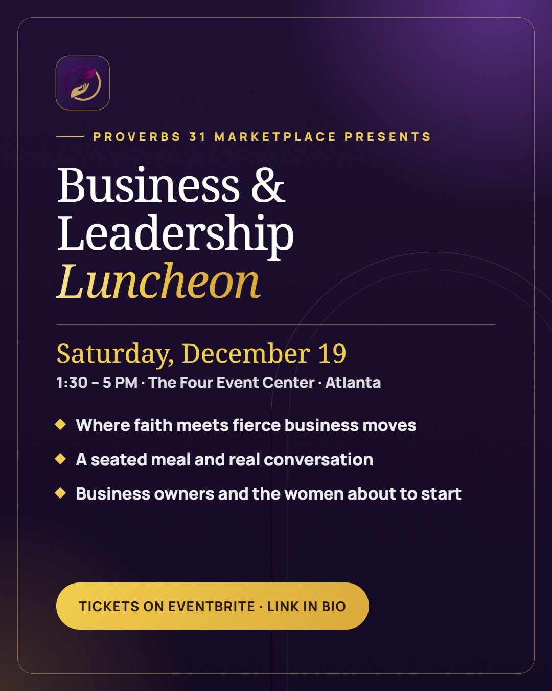
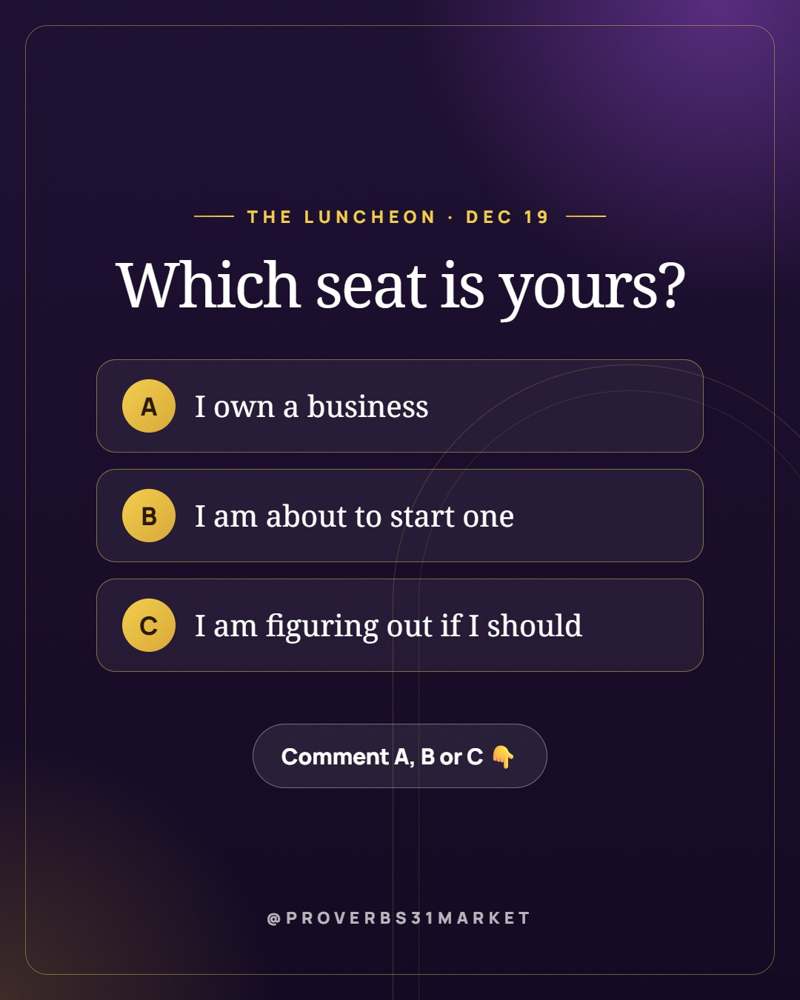
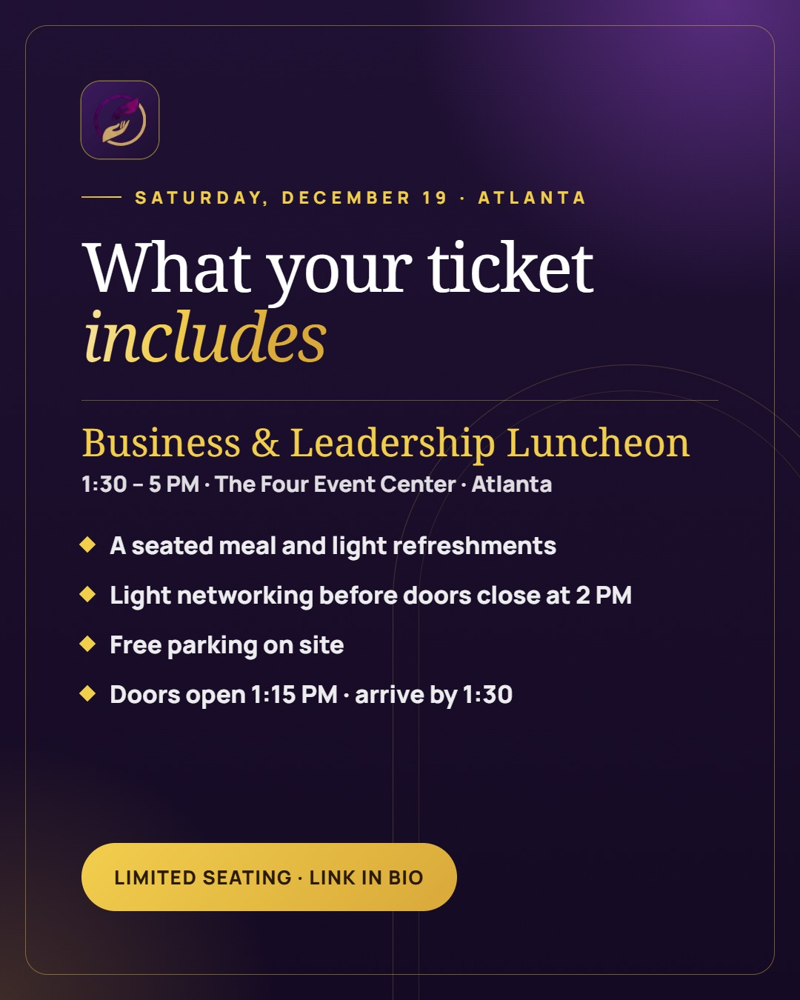
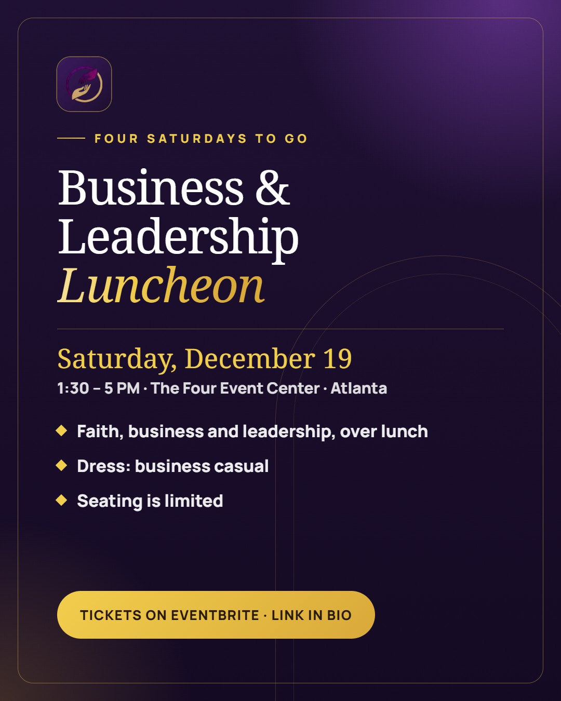
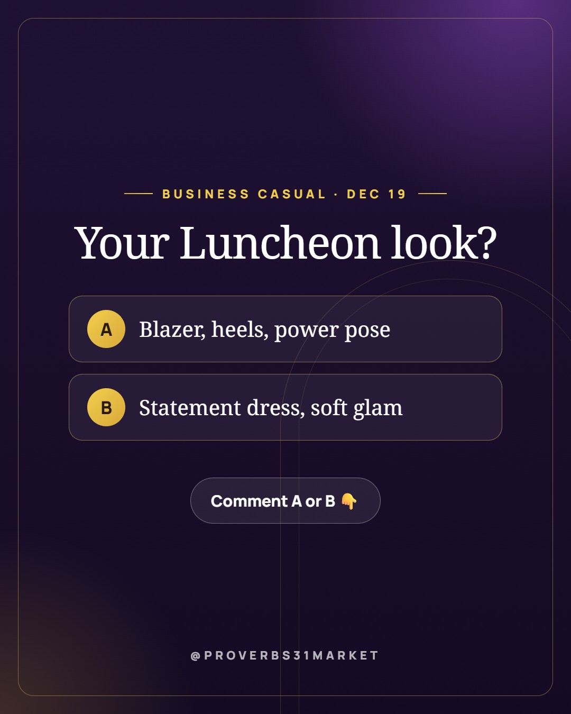

Save the date. ✨ The Proverbs 31 Business & Leadership Luncheon is Saturday, December 19 · 1:30 – 5 PM at The Four Event Center · Atlanta. An afternoon where faith meets fierce business moves and leadership tips: a seated meal, light networking, and a room full of women building what God put in their hands. Business owners, aspiring entrepreneurs, and anyone ready to start are welcome. Seating is limited. Tickets are on Eventbrite (link in bio). Who are you bringing to the table? 👇 #P31Marketplace #BusinessLuncheon #WomenInLeadership #FaithAndBusiness #AtlantaEvents #WomenEntrepreneurs #Proverbs31Woman

Which seat is yours at the Business & Leadership Luncheon? 🪑 A) I own a business B) I'm about to start one C) I'm figuring out if I should All three belong in the room on Saturday, December 19. Comment your letter, and tell us the one thing you want to walk away with 👇 Tickets are on Eventbrite (link in bio). #P31Marketplace #BusinessLuncheon #WomenInLeadership #FaithAndBusiness #AtlantaEvents #WomenEntrepreneurs #Proverbs31Woman

Here's what your ticket to the Business & Leadership Luncheon includes 🍽️ • A seated meal, with light refreshments through the afternoon • Light networking before we begin, so bring business cards • Free parking on site • Doors open at 1:15 PM; please arrive by 1:30. Doors close at 2. Saturday, December 19 · 1:30 – 5 PM, The Four Event Center · Atlanta. Seating is limited and all sales are final, so reserve early. Tickets on Eventbrite (link in bio). What's one question you'd ask a room full of women leaders? 👇 #P31Marketplace #BusinessLuncheon #WomenInLeadership #FaithAndBusiness #AtlantaEvents #WomenEntrepreneurs #Proverbs31Woman
Finish the sentence: the best business advice I ever got was ______. We'll read a few of your answers out loud at the Business & Leadership Luncheon on Saturday, December 19. 🎤 Drop yours below 👇 Short or long, we read every one. #P31Marketplace #BusinessLuncheon #WomenInLeadership #FaithAndBusiness #AtlantaEvents #WomenEntrepreneurs #Proverbs31Woman

Four Saturdays until the Business & Leadership Luncheon. 🗓️ Saturday, December 19 · 1:30 – 5 PM, The Four Event Center · Atlanta. Faith, business and leadership, over a seated lunch, with women who are building the same way you are. Dress code is business casual. Seating is limited; tickets on Eventbrite (link in bio). Honest question: are you more excited for the lunch or the leadership talk? 😄 Tell us below 👇 #P31Marketplace #BusinessLuncheon #WomenInLeadership #FaithAndBusiness #AtlantaEvents #WomenEntrepreneurs #Proverbs31Woman

Business casual for the Luncheon. What are you wearing? 👗🧥 A) Blazer, heels, power pose B) Statement dress, soft glam Comment A or B 👇 (Yes, we'll be looking for you on Saturday, December 19.) Tickets on Eventbrite (link in bio). #P31Marketplace #BusinessLuncheon #WomenInLeadership #FaithAndBusiness #AtlantaEvents #WomenEntrepreneurs #Proverbs31Woman